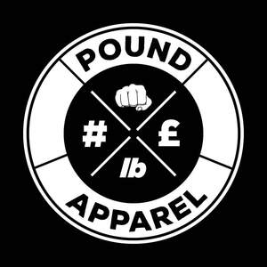

Trade Mark Journal No.2025/041 10 October 2025
UK00004269798 26 September 2025 (18,25)

- Class 18
- Bags for sports clothing; Holdalls for sports clothing.
- Class 25
- Parts of clothing, footwear and headgear; Clothing; Knitwear [clothing]; Outerwear; Ready-to-wear clothing; Footwear; Jackets [clothing]; Jackets being sports clothing; Gloves [clothing]; Gloves as clothing; Woolen clothing; Windproof clothing; Gloves for apparel; Rainproof clothing; Headbands for clothing; Men's clothing; Headbands [clothing]; Jerseys [clothing]; Gabardines [clothing]; Oilskins [clothing]; Cashmere clothing; Garments for protecting clothing; Visors [clothing]; Headwear; Leather clothing; Clothing of leather; Leather (Clothing of -); Waterproof clothing; Athletic clothing; Denims [clothing]; Water-resistant clothing; Clothing for sports; Sports clothing; Playsuits [clothing]; Weatherproof clothing; Sneakers [footwear]; Shorts [clothing]; Muffs [clothing]; Leather headwear; Knitted clothing; Clothing for leisure wear; Footwear [excluding orthopedic footwear]; Footwear for snowboarding; Furs [clothing]; Bandeaux [clothing]; Embroidered clothing; Quilted jackets [clothing]; Capes (clothing); Jackets (Stuff -) [clothing]; Stuff jackets [clothing]; Casual clothing; Golf clothing, other than gloves; Aprons [clothing]; Clothing for cycling; Mitts [clothing]; Clothing layettes; Layettes [clothing]; Collars [clothing]; Maternity clothing; Sportswear; Clothing for skiing; Footwear for use in sport; Veils [clothing]; Footwear for sport; Footwear for women; Chaps (clothing); Belts [clothing]; Belts for clothing; Casual footwear; Party hats [clothing]; Footwear for men; Wristbands [clothing]; Kerchiefs [clothing]; Triathlon clothing; Mufflers [clothing]; Footwear for sports; Sports footwear; Shoes for leisurewear; Hoods [clothing]; Athletic footwear; Tops [clothing]; Bottoms [clothing]; Sports clothing [other than golf gloves]; Leisure clothing; Linen clothing; Clothing for gymnastics; Handwarmers [clothing]; Woven clothing; Cowls [clothing]; Latex clothing; Thermal clothing; Sports garments; Silk clothing; Trunks being clothing; Wooden shoes [footwear]; Clothing for cyclists; Dance clothing.
Pound Apparel Ltd